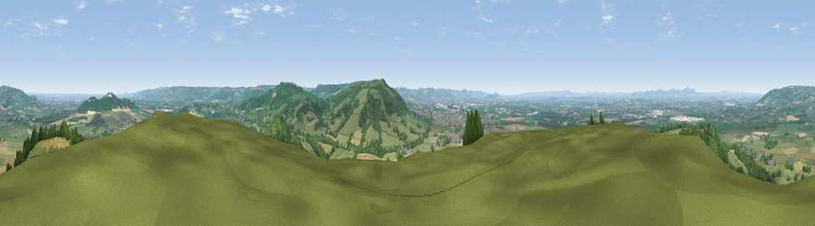

Viewpoint near Alstone
#1009 in England · top 4% of its area beats it · near Alstone · access?Where it is
The exact computed spot (SO 97350 31425). Click the marker for map links.
Public access: no public right of way or access land is recorded at this exact spot — it may be on private land. Computed from Natural England's CRoW access layer and OpenStreetMap rights of way — not the legal definitive map. Always verify locally.
The view, rendered

A 360° render of this exact spot computed from the terrain model, tree cover and land cover — summer colours, afternoon light, calibrated against photographs of famous viewpoints. Real trees, hedges and buildings will differ in detail.
The panorama
Grey silhouette: terrain skyline in each direction (720 bearings, Earth curvature and refraction included). Dashed green: skyline with trees (+15 m) and buildings (+8 m) as obstacles. Blue strip: how far the ground is visible on each bearing.
Where the view opens
Wedge length = distance to the farthest visible ground on that bearing (vegetation-aware). Rings at 10, 25 and 50 km.
What fills the view
51% grassland · 24% cropland · 22% woodland · 3% built-up
Angular shares of the visible panorama (visual magnitude), not map area. Landscape diversity 0.49 (0–1 Shannon).
Key numbers
More beautiful places nearby
The staircase of upgrades: each row has a higher view potential than everything closer. Driving times are estimates from straight-line distance, calibrated against real road routing — check an actual route before setting out.
| Place | Direction | Drive | Score |
|---|---|---|---|
| Nottingham Hill | SSE · 3 km | ~8 min | 80.9 |
| Viewpoint near Bredon's Norton | NNW · 9 km | ~17 min | 81.3 |
| Bredon Hill | N · 9 km | ~18 min | 83.0 |
| Black Hill | WNW · 23 km | ~38 min | 83.1 |
| Millennium Hill | WNW · 23 km | ~38 min | 86.9 |
| Worcestershire Beacon | NW · 25 km | ~40 min | 87.1 |
| Viewpoint near West Quantoxhead | SW · 123 km | ~147 min | 87.9 |
| Viewpoint near West Quantoxhead | SW · 124 km | ~148 min | 88.7 |
51.98128, -2.03999 · source: screening · position refined by local search. Computed location — check access rights before visiting.